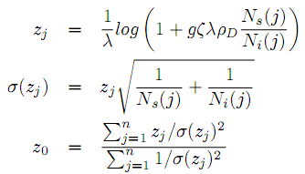
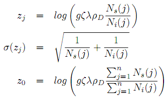
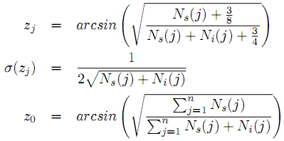
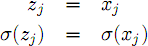
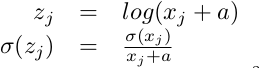

Transformations
Density Plots
The analytical precision of many geochronological datasets is proportional to
the age. Therefore, the relative errors generally show less grain-to-grain
variability than the absolute errors. To take advantage of this, it may be
beneficial to log-transform the data before plotting them on a KDE, PDP, or
histogram. To do this, select the appropriate option in the
Options→ Transformations menu.
Radial Plots
Data transformations are even more important for radial plots than they are for
density plots. In the case of fission track dating with
the external detector method, Galbraith (1990) proposed three
transformations:
Linear:

Logarithmic:

Arcsine:

With λ the 238U decay constant
(=1.55125x10-10a-1), g a geometric factor (=0.5), and all other
parameters as defined before. The Logarithmic transformation is
used by default, unless there are grains with zero spontaneous tracks,
in which case the program defaults to Arcsine.
To plot 'Other' input data on radial plots, only two transformations are
available, with a default set to Logarithmic.
Linear:

Logarithmic:

Where a=0 if all the values are positive and a>0 if there are negative
values (Galbraith, 2010).